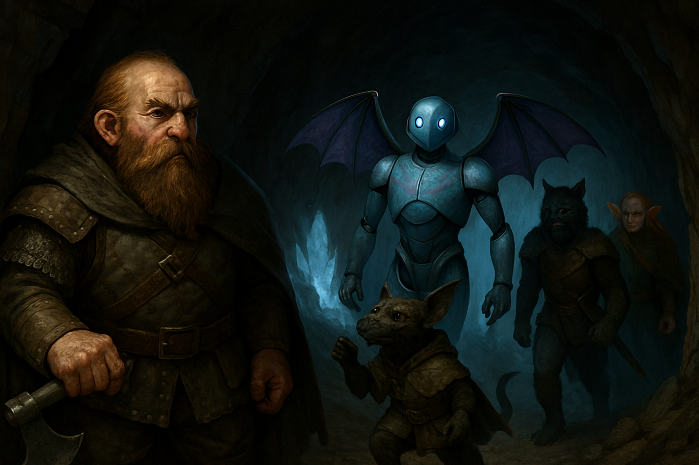

Chapter 2: The Trade
Dragon’s Orb

Dragon’s Orb
15048.11.30
如同 27 年前般，克里歐門王國歐倫市的王宮宴會廳正熱鬧地款待著冒險者們，不過此時坐在主桌的，是現任的女王，也就是當年的 Uma 公主。
Dragon’s Orb 在這二十多年內，已成功讓克里歐門王國產出了永續的電力，除了龍蛋上的紫色斑紋變得更淡之外，效力還是十分強烈。此時，龍蛋已被放在王國的博物館內，而這次女王聘請的冒險者們，任務是護送這顆蛋到指定的交易地點，與妖精的洛森王國進行交易，換取好幾箱妖精釀的美酒。
同樣的桌上，四名冒險者包含皮膚黝黑的猩猩獸人 Mus、喜愛彈奏與歌唱的漁人烏鯊大、把自己包得厚厚的、似乎非常怕冷的半妖精韓流，以及頭上有著四顆光球的闇妖精 Miara。
在烏鯊大的烘托下，宴會非常熱鬧。Miara 向 Uma 女王詢問關於一位名為 Titania 的前輩，似乎過去也曾來這裡出任務，卻沒有了消息。女王簡單說明了自己所知的事：Titania 是過去前往取得 Dragon’s Orb 的冒險團成員之一，但那些人只有一名狗頭人回來而已。
聽見了 Miara 對 Titania 的打聽，一名矮人走向他，表示自己知道一些消息，要拉他到外頭談。烏鯊大和 Mus 想跟著去，但在矮人的要求下被打發走了。走到王宮側門外，矮人遞給了 Miara 一根菸，將手搭在他的肩上，表示 27 年前，Titania 在離開前往出任務前，和他共度了一個美妙的夜晚。不過除此之外他沒有別的消息可以提供了。Miara 陷入沉思，但同時，他看見了矮人的手伸向腰際一處，閃著金屬光澤。
「幹你娘死妖精！」
討厭妖精的矮人
矮人從腰際掏出一把匕首，對著 Miara 的肚子便是一陣猛刺。Miara 一陣驚慌，趕緊掙脫，逃回王宮內，並透過自己的法術爭取了一些時間。Miara 抱著肚子回到了宴會廳，引起了一陣騷動。Uma 女王趕緊傳喚了醫師，肇事的矮人回到了宴會廳口後，在女王的譴責下，拿起剛剛刺殺 Miara 的匕首，劃破了自己的喉嚨，倒地不起。冒險者們檢查了矮人身上的狀況，發現那把匕首上似乎刻著妖精語，其中只有「Pureblood」的字樣可以解讀而已。在其他矮人的說明下，這名矮人是名打鐵鋪的老闆，而這把武器看起來像是他自己鍛造的，不過對於他仇恨妖精的行為，沒有人有觀察到任何跡象。
Uma 女王不斷向冒險者們賠不是，同時也答應讓韓流前往那名矮人的打鐵鋪探索一下。Mus 和烏鯊大則留下來陪伴受傷的 Miara。在女王的安排下，烏鯊大和 Miara 同住一房，Mus 則先入住雙人房，等待韓流回來。
韓流和兩名矮人一同前往打鐵鋪的過程中，為了不讓一樣有妖精血脈的韓流感到不適，一名矮人表示自己的老婆也是妖精，另一名矮人則表示自己是同性戀，懂得身為少數族群的那種感受。到了打鐵鋪，眾人發現打鐵鋪的門已被敲破，裡面一片混亂，但是可以翻到不少和行兇的匕首相似的匕首，但看起來都是半成品。除此之外，並沒有多少收穫。
離開打鐵鋪後，在獲得同意下，韓流便前往老婆是妖精的矮人家過夜，另一名矮人也興致勃勃地一同前往。在妖精老婆的閱讀下，匕首上的文字沒有更多的解讀，但四人共度了美妙的一晚。
15048.12.01
一早醒來，Mus 發現自己的室友還沒回來。復原完整的 Titania、在澡盆內睡得很好的烏鯊大，以及 Mus 一同來到樓下宴會廳用早餐，並等待韓流回來。
用餐到一半，一名矮人女子來向他們打招呼，表示自己是本次和他們一同出任務的夥伴，但奇異的是，他不願透露自己的名字。
用完早餐後，女子抱著 Dragon’s Orb，與他們四人一同上了馬車，準備出發。女子向他們介紹，這次駕車的是一名機器人，叫 BoBo-C。
車上，女子從後車廂拿出了不少啤酒，讓烏鯊大和 Mus 享用，韓流和 Miara 則向她詢問關於這次任務的事，但女子似乎不太願意透露太多，不過女子表明了自己的名字叫 Bol-Bol，小時候因為名字和機器人系列 BoBo 相似，被開了很多玩笑，因此不喜歡自己的名字。
Bol-Bol 在馬車前行一段時間後，似乎向兩名清醒的冒險者施放了法術，韓流靠著意志保持清醒，Miara 則因為天生的特性，不會被影響。Miara 感到異狀，便也施了法，讓 Bol-Bol 必須說實話。
在誠實的 Bol-Bol 說明下，兩人得知這次的任務除了 Uma 女王外，似乎有另外的勢力透過 Bol-Bol 想做其他事，但重要的資訊卻被干擾了，讓 Bol-Bol 無法完整透露。Bol-Bol 表示自己施法只是想讓大家安靜地度過這趟旅程，畢竟這趟旅程要五天才會到，還有很久。經過詢問後，兩人得知 Bol-Bol 其實也是機器人。在韓流的要求下，Bol-Bol 將 Dragon’s Orb 遞給 Miara 後，開始將自己拆解，直到成為掉落在馬車上的零件。在零件中，有個面板，上面寫著大大的「BoBo-OMEGA」，像是商標一樣。
韓流向駕車的 BoBo-C 詢問，得知附近有個村莊。韓流和 Miara 將烏鯊大和 Mus 叫醒後，說明剛剛發生的事。四人在村莊停車，找了附近的旅店用餐和住宿，同時也請 BoBo-C 將剛才 Bol-Bol 的零件裝在他的肚子內。眾人試著從 BoBo-C 打聽關於剛才 Bol-Bol 相關的消息，卻只發現 BoBo-C 是較為初階的機器人，而且他並不知道這件任務背後還有 Uma 女王外的勢力在干預。
BoBo-C 背後的一個紅色小燈亮起，在他的解釋下，附近有他的夥伴正在接近中。一段時間後，旅店門口的光線被遮蓋住，接著，一名看起來與 BoBo-C 相似的機器人走進了酒館內。BoBo-C 向大家介紹，這是他的同類 BoBo-W。BoBo-W 和他長相相似，只是長得更高，皮膚淺藍色且有紫色斑紋，另外背後長了翅膀。
在 BoBo-W 和 BoBo-C 的說明下，冒險者們決定提早出發到交易點。冒險者將 Dragon’s Orb 遞給 BoBo-W，卻看見他把 Dragon’s Orb 放在 BoBo-C 頭上，Dragon’s Orb 融入 BoBo-C，BoBo-C 逐漸轉化成與 BoBo-W 相似的模樣，只是稍微小了一點點。進化後的 BoBo-C 自稱自己已變成了 BoBo-Z。
冒險者們協調著該怎麼「搭乘」BoBo-W 和 BoBo-Z。烏鯊大坐上了 BoBo-W 的背，Miara 則坐上了 BoBo-Z 的背。Mus 和韓流抱起了 BoBo-W 和 BoBo-Z 的大腿，但兩名機器人都表示這樣不平衡，沒辦法飛，Mus 只好改抱 BoBo-Z 的大腿，BoBo-W 便往外走去。然而，BoBo-Z 表示這樣太重，他飛不起來，韓流於是決定回到房間去，不管這一切了。在 BoBo-Z 的協調下，Mus 抱著他的兩隻腿，BoBo-Z 便騰空飛起，跟上已飛在空中的他的前輩。
夜已深，空中的三名冒險者敵不過睡意，Miara 和烏鯊大都在機器人背上睡著了，Mus 則在迷濛之中，發現自己還抱著 BoBo-Z 的大腿，睡意襲來，他撐不住，便從高空掉了下去。
15048.12.02
天亮後，BoBo-W 和 BoBo-Z 都抵達了約定好的會面點。Miara 和烏鯊大看見走來的妖精，想向他們說明 Dragon’s Orb 溶到機器人身體的事，沒想到一名妖精走向 BoBo-W 和 BoBo-Z，熟練地在他們機體幾處按了一下，兩顆 Dragon’s Orb 便滑順地從他們的身體落了下來，兩名機器人則化回了原本的 BoBo-V 和 BoBo-C，跟著抱著 Dragon’s Orb 的妖精們便往回走，留下詫異的 Miara 和烏鯊大，以及幾箱約定好的美酒。
沒了馬車，美酒無法直接帶走，烏鯊大打開其中一罐酒，大口一飲，這的確比 Uma 女王在晚宴請他們的酒都好喝多了。Miara 透過法術，向 Uma 女王、留在旅店的韓流，以及不知去向的 Mus 傳遞了訊息，告訴他們交易已經完成了，但是沒有馬車，他們回不去。女王表示他會派人過去，但是需要五天的時間才會到；韓流表示既然任務完成了，那他也不用再回去見女王了；Mus 則沒有消息。
五天後，韓流已前往了溫暖的南方，而女王的兩台馬車也到了交易點，馬車上，一台機器人都沒有。